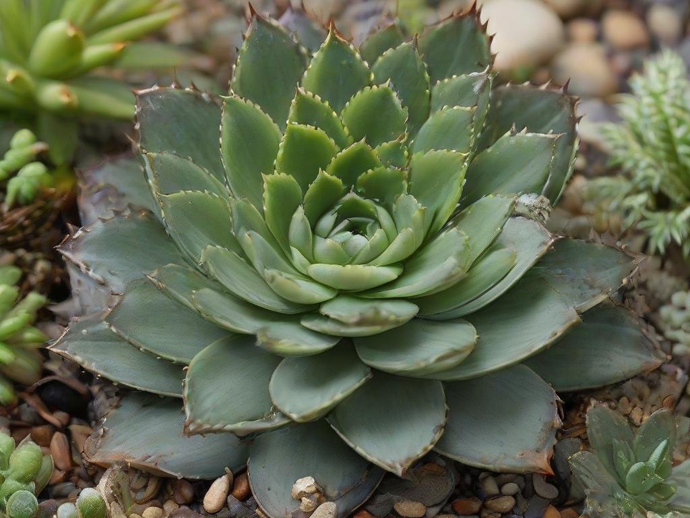

Домашний цветок Хавортия
Хавортия - это популярный домашний цветок, который известен своими уникальными формами и устойчивостью к неблагоприятным условиям. Он относится к семейству алоэ и произрастает в южной части Африки.
Хавортия имеет много разновидностей, каждая из которых имеет свою уникальную форму и окраску листьев. Этот цветок привлекателен своими геометрическими паттернами и способностью сохранять воду, что делает его легким в уходе.
Для процветания Хавортии необходимо обеспечить яркое, но рассеянное освещение. Также важно поддерживать умеренное поливание и хорошую дренажную систему для предотвращения загнивания корней.
Хавортия обладает не только декоративными свойствами, но и целебными. Сок этого растения содержит полезные вещества, такие как алоэверозиды и полисахариды, которые могут помочь снять воспаление и улучшить пищеварение.
Кроме того, Хавортия известна своими антибактериальными и противогрибковыми свойствами. Ее сок можно использовать для лечения поверхностных ран, ожогов и укусов насекомых.
Чтобы защитить Хавортию от паразитов, рекомендуется регулярно осматривать растение и удалить любые видимые насекомые. Также полезно применять натуральные средства, такие как раствор мыла и воды или натуральные масла, чтобы предотвратить нападение паразитов.
Хавортия становится все более популярной как декоративный элемент в интерьере. Ее устойчивость и красота делают ее отличным выбором для тех, кто хочет добавить природу и стиль в свой дом.
Рецепт вкусного супа на основе домашнего растения Хавортия:
Ингредиенты:
- 1 кг свежих овощей (морковь, лук, картофель, перец, томаты)
- 500 г домашней хавортии
- 1 литр овощного бульона
- Соль и перец по вкусу
- Зелень для украшения
Инструкции:
- Подготовьте овощи: очистите и нарежьте морковь, лук, картофель, перец и томаты.
- В большой кастрюле разогрейте немного масла и обжарьте лук до золотистого цвета.
- Добавьте морковь и перец и готовьте вместе с луком в течение 5 минут.
- Добавьте картофель и томаты, и продолжайте готовить еще 5 минут.
- Залейте овощи овощным бульоном и доведите до кипения.
- Добавьте домашнюю хавортию и варите суп на среднем огне около 15-20 минут, пока овощи не станут мягкими.
- Посолите и поперчите суп по вкусу.
- Подавайте горячим, украсив зеленью.
- Приятного аппетита!